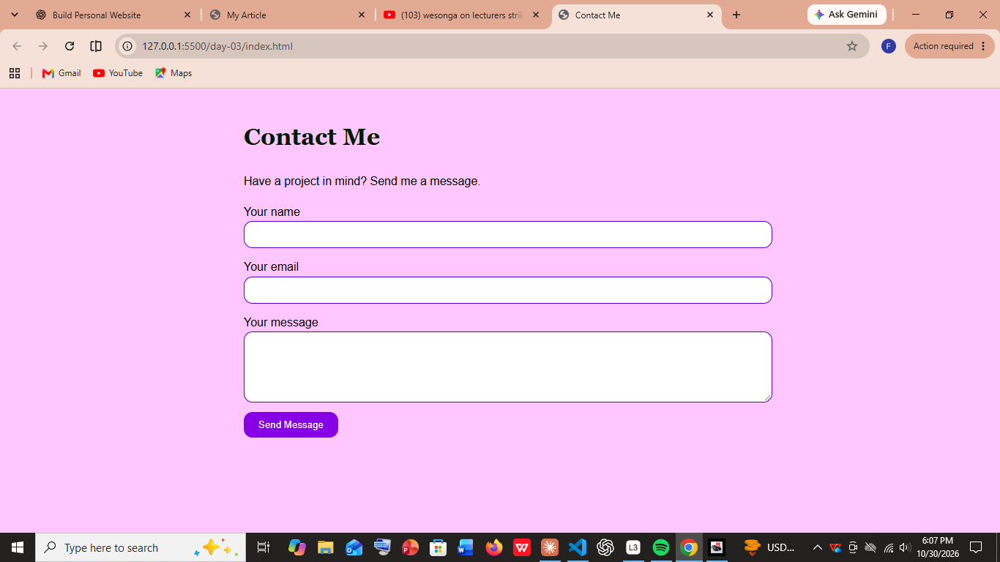

Learning Tech One Bug at a Time
I’m still new to tech, and honestly, that’s what makes it exciting. One day I’m building a website with HTML and CSS; the next I’m staring at a C program, wondering how one missing bracket ruined everything. Every mistake teaches me something, and seeing code I wrote actually work never gets old. I’m taking it step by step: learning by building, breaking things, fixing them, and seeing how far I can go.
Every mistake teaches me something.
Why I Learn by Doing
I’ve realised I understand things better when I try them myself. Tutorials help, but nothing teaches like starting with a blank screen and slowly turning an idea into something that works. This website is part of that process: a place to experiment, make mistakes, improve, and have something real to show for what I’m learning.
